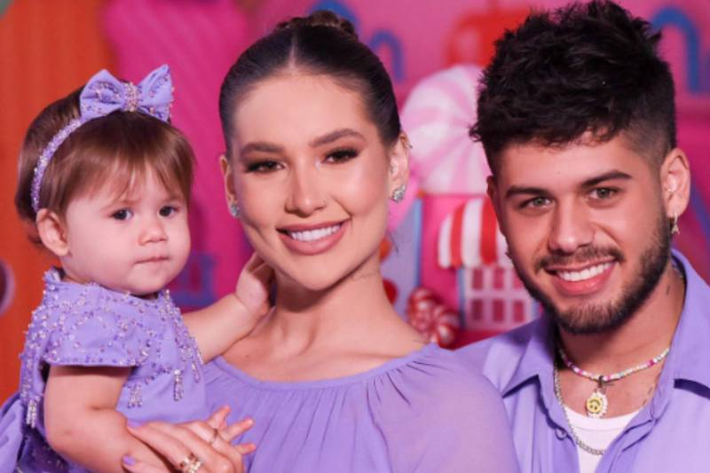

Virgínia Fonseca é uma influencer, youtuber e empresária americana nascida em Connecticut em 6 de abril de 1999. Nas redes, Virgínia dá dicas de beleza para seus seguidores além de compartilhar sua rotina. Após morar em Minas Gerais por um período, se mudou para Londrina, no Paraná.
Na vida pessoal, Virgínia Pimenta Fonseca Serrão assumiu namoro em julho de 2020 com o cantor Zé Felipe, um dos seis filhos do sertanejo Leonardo. Eles se casam em março seguinte com o casal à espera da primeira filha, Maria Alice, nascida em 30 de maio.

Durante a gestação, Virgínia relatou ter enfrentado depressão por conta da gravidez. Em 22 de outubro de 2022, a influencer dá à luz Maria Flor, sua segunda filha com o sertanejo.
